AutoCAD adalah perangkat lunak komputer CAD untuk menggambar 2 dimensi dan 3 dimensi yang dikembangkan oleh Autodesk. Keluarga produk AutoCAD, secara keseluruhan, adalah software CAD yang paling banyak digunakan di dunia.
AutoCAD digunakan oleh insinyur sipil, land developers, arsitek, insinyur mesin, desainer interior dan lain-lain.
Format data asli AutoCAD, DWG, dan yang lebih tidak populer, Format data yang bisa dipertukarkan (interchange file format) DXF, secara de facto menjadi standard data CAD.
Akhir-akhir ini AutoCAD sudah mendukung DWF, sebuah format yang diterbitkan dan dipromosikan oleh Autodesk untuk mempublikasikan data CAD.
AutoCAD saat ini hanya berjalan disistem operasi Microsoft. Versi untuk Unix dan Macintosh sempat dikeluarkan tahun 1980-an dan 1990-an, tetapi kemudian tidak dilanjutkan. AutoCAD masih bisa berjalan di emulator seperti Virtual PC atau Wine.
AutoCAD dan AutoCAD LT tersedia dalam bahasa Inggris, Jerman, Perancis, Italia, Spanyol, Jepang, Korea, Tionghoa Sederhana, Tionghoa Tradisional, Rusia, Ceko, Polandia, Hongaria, Brasil, Portugis, Denmark, Belanda, Swedia, Finlandia, Norwegia dan Vietnam.
Saya kira udah sedikit jelas ya pengertian autocad,ya bisa di simpulkan kalau autocad itu sebuah aplikasi yang di gunakan untuk menggambar/mendesain sesuatu. nah dari situ saya berpikir apa salahnya sih kita mencoba hal baru apalagi ekskul autocad yang di adakan di kampus Amik itu gratis. sementara kalau kita ikut les autocad atau lainnya itu bayar dan mahal.
akhirnya setelah mencoba untuk ikut saya ngerasa saya harus mendalami autocad ini karena itu berguna banget untuk kita mencari kerja, ya semisal di kontraktor menjadi drafter atau di perusahaan2 lainnya yang membutuhkan keahlian autocad. ya selain dari itu autocad juga bisa jadi hobi yang menarik dan berkualitas untuk kita. di sana kita bisa menggambar kendaraan berikut komponennya,baju,bahkan mendesain rumah dan bangunan lainnya.
Sebenarnya banyak juga aplikasi lainnya yang bisa menunjang hobi menggambar kita seperti 3dsmax,inventor,coreldraw,sketch up,softlan dan lainnya. tapi autocad itu sendiri memiliki kelebihan dan kekurangannya.
Kelebihan AutoCAD:
- Gambar yang dihasilkan mempunyai kualitas jauh lebih baik dibanding dengan hasil gambar manual karena gambar lebih rapi dan presisi,
- Gambar desain yang dihasilkan mempunyai tingkat akurasi yang tinggi karena AutoCAD mempunyai tingkat presisi hingga tiga belas digit sehingga gambar lebih sempurna dan tepat ukurannya,
- Gambar yang dihasilkan akan terjamin kerapian dan kebersihannya karena sangat memungkinkan direvisi maupun pengeditan gambar untuk kesesuaian cetak yang dikehendaki,
- Bidang gambar kerja AutoCAD tidak terbatas sehingga memungkinkan untuk membuat gambar dengan ukuran yang sangat luas dan kompleks, tetapi dalam pencetakannya bisa dipilih bagian tertentu saja,
- Skala gambar yang dihasilkan fleksibel karena dapat mencetak gambar desain yang dihasilkan dengan jenis skala yang sangat variatif,
- Gambar yang dihasilkan bisa disimpan dengan cara yang sangat mudah, dimana hasil penyimpanan gambar tersebut bisa dibuka dengan software lain serta dipublikasikan untuk kerja antar tim apabila diperlukan.
Kekurangan AutoCAD:
- Aplikasi ini menjadi lebih kompleks.
- Kebutuhan hardware yang lebih tinggi.
- Infrastruktur pendukungnya harus memadai, seperti penggunaan printer/plotter untuk mencetak gambar dalam ukuran yang besar.
Software prabayar.
- Struktur file hasil penggambaran, definisi database dan file database dari software tersebut rumit.
- Alur dari proses pekerjaan desain rumit karena software tersebut terbagi atas beberapa software lagi menurut bagian konstruksi mana yang akan dibuat.
- Software tersebut kurang familiar diantara para drafter dan desainer kapal, hanya orang yang pernah diberi pelatihan saja yang bisa, sementara pelatihan software tersebut sangat mahal.
LANGKAH-LANGKAH AWAL YANG HARUS DI PERHATIKAN SEBELUM MULAI MENDESAIN PADA AUTOCAD
Untuk mendapatkan hasil yang maksimal dalam mendesain gambar pada autocad tentunya kita harus memperhatikan dan memahami langkah-langkah awalnya terlebih dahulu, yaitu sebagai berikut :
ket : (=> artinya enter)
- Mensetting worksheet.
command yang di pakai : Units (un), Limits dan Pagesetup
- Units => pilih insertion scale = milimeters =>
- Limits => => @29700,21000 =>
- Pagesetup => pilih modify – pilih paper size = ISO A4 (29700 x 21000 mm) – pilih drawing orientation = landscape =>
- Memperbesar dan memperkecil gambar.
command yang di pakai : Zoom (z)
- Z => => klik Tarik ke atas unutk memperbesar dan klik ke bawah untuk memperkecil =>
- Menggeser gambar.
command yang di pakai : P
- P => lalu geser sesuai keinginan =>
- Jika gambar tidak bisa di perbesar atau di perkecil.
command yang di pakai : Zoom (z)
- Untuk menghidupkan titik bantu.
command yang di pakai : Osnap
- Osnap => ‘muncul tabel’ – pilih object snap - lalu centang semuanya yang ada di dalam tabel bagian object snap =>
- Untuk membuat garis agar hanya horizontal dan vertical saja.
command yang di pakai : Ortho
- Untuk membuat garis bergerak bebas (tidak hanya horizontal dan vertical saja).
command yang di pakai : Ortho
- Untuk memindahkan sumbu ucs agar tidak berada di tengah.
command yang di pakai : Ucsicon
- Ucsicon => pilih NO ORIGIN =>
- Untuk workspace switching pilih AUTOCAD CLASSIC.
- Untuk menyetting warna layar atau yang lainnya gunakan command OPTION.
- Untuk menghapus command gunakan tombol ESC.
- Untuk mengembalikan ke bagian yang sebelumnya gunakan command UNDO (U).
MACAM - MACAM COMMAND 2D DALAM AUTOCAD
Berikut adalah macam-macam command 2d yang biasa di gunakan di dalam autocad :
arc (a)
Untuk membuat setengah lingkaran dengan menggunakan garis tengah/start dan end point (busur).
Array (ar)
Untuk menggandakan object yang sama secara akurat dengan menyesuaikan pada titik tengahnya.
Chamfer (cha)
Untuk membuat siku-siku atau sudut pada segi empat.
Circle (c)
Untuk membuat lingkaran.
Copy (co)
Untuk memperbanyak object sesuai dengan keinginan.
Dimlinear (dli)
Untuk memberi keterangan pada ukuran garis.
Dimradius (dra)
Untuk memberi keterangan pada ukuran lingkaran.
Dimensi (d)
Untuk mensetting tampilan ukuran Dli/Dra sesuai yang di inginkan mulai dari model dan warnanya.
Dtext (dt)
Untuk memberi keterangan berupa tulisan/text.
divide (div)
Untuk memperbanyak object yang berasal dari perintah block.
Ellipse (el)
Untuk membuat ellips.
Explode (x)
Untuk memecah object/garis yang tersambung/yang di pedit.
Extend (ex)
Untuk menyambungkan garis yang kurang menyambung.
Fillet (f)
Untuk membuat radius/lengkungan pada sebuah sudut.
Hatch (ha)
Untuk memberi arsiran/warna pada object 2d.
Line (L)
Untuk membuat garis.
Mirror (mi)
Untuk membuat cerminan gambar atau untuk memperbanyak object (efek kaca).
Move (m)
Untuk memindahkan object.
Multiline (mL)
Untuk membuat object dengan dua garis sekaligus.
Multiline text (mt)
Untuk memberi keterangan berupa tulisan/text.
Offset (o)
Untuk menggandakan garis/object.
Polygon (pol)
Untuk membuat segi banyak atau lingkaran banyak sisi.
Polyline (pl)
Untuk membuat object/garis yang secara otomatis tersambung atau garis yang bisa di (extrude).
Polyline edit (pedit)
Untuk menyatukan object/garis pada 2d agar bisa di (extrude).
Rectangle (rec)
Untuk membuat segi empat.
Rotate (ro)
Untuk memutar object 2d.
Solid
Untuk mempertebal object.
spline
Untuk membuat object/garis secara bebas sesuai keinginan.
trim (tr)
Untuk menghapus object.
Untuk lebih lengkapnya silahkan kunjungi Command2dAutocad
MACAM - MACAM COMMAND 3D DALAM AUTOCAD
Berikut adalah macam-macam command 3d yang biasa di gunakan di dalam autocad :
3d rotate (3r)
Untuk merotasi object 3d.
3do
Untuk memutar object 3d.
background
Untuk memberi tampilan background pada 3d.
extrude (ext)
Untuk mengubah object 2d menjadi 3d.
isolines
Untuk memberi garis pada tampilan 3d.
loft
Untuk mengubah object 2d menjadi 3d sesuai bentuk yang di inginkan.
render (rr)
Untuk menjadikan object 3d menjadi nyata.
revolve (rev)
Untuk mengubah object 2d menjadi 3d dalam bentuk 360 derajat.
rmat
Untuk memberi warna pada object 3d dengan membuat jenis warna sendiri.
subtract (su)
Untuk memotong object 3d.
sunproperties
Untuk memberi tampilan style pada 3d seperti pencahayaan dan lainnya.
toolpallets (tp)
Untuk memberi warna pada object dengan jenis warna yang sudah di sediakan.
union
Untuk menggabungkan object 3d yang terpisah.
viewpoint (vp)
Untuk merubah sudut pandang pada tampilan 3d.
visualstyle (vs)
Untuk merubah tampilan dari 2d menjadi 3d realistic dan sebagainya.
Untuk lebih lengkapnya silahkan kunjungi Command3dAutocad
TUTORIAL MEMBUAT GAMBAR 2D CHAMSHAFT MESIN DENGAN AUTOCAD
Saya akan menjelaskan bagaimana langkah-langkah untuk membuat gambar chamshaft mesin 2d dalam autocad, dan versi autocad yang saya pakai adalah autocad 2010. ok jadi seperti biasa langsung aja kita mulai ..
ket:
(untuk tanda => itu artinya enter)
(untuk tanda - itu artinya terus)
- Membuat garis pertama.
command yang di pakai : Line (L)
- L => klik sembarang lalu geser – tulis 70 => =>
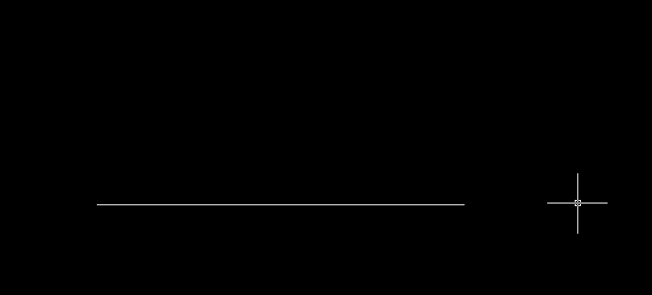
- Membuat Garis kedua.
command yang di pakai : Line (L)
- L => klik di midpoint/titik tengah garis pertama tadi - Tarik ke atas – tulis 60 => =>
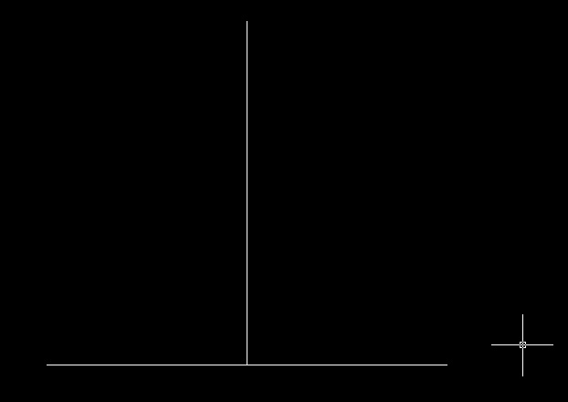
- Membuat Lingkaran 1 dan 2 bagian atas .
command yang di pakai : Circle (c)
- C => klik di ujung garis kedua untuk mendapatkan titik tengahnya - tarik ke samping - tulis 16 (ukuran jari2nya) =>
- C => klik di ujung garis kedua untuk mendapatkan titik tengahnya - tarik ke samping - tulis 25 (ukuran jari2nya) =>
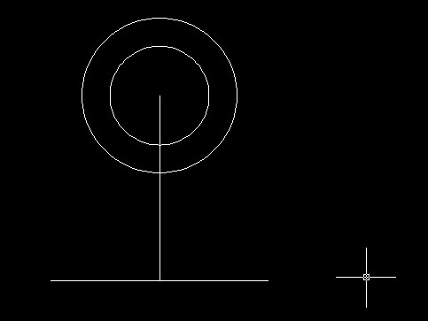
- Membuat Lingkaran 3 dan 4 bagian samping kiri dan kanan.
command yang di pakai : Circle (c)
- C => klik di ujung garis pertama untuk mendapatkan titik tengahnya - tarik ke samping - tulis 7,5 (ukuran jari2nya) =>
- C => klik di ujung garis pertama untuk mendapatkan titik tengahnya - tarik ke samping - tulis 12,5 (ukuran jari2nya) =>
untuk membuat lingkaran 1 dan 2 yang sebelahnya bisa juga dengan menggunakan command : copy
- Co => select object (lingkaran 3 dan 4) => klik base point/Titik tengah lingkaran/ujung garis - tarik lalu klik di ujung garis lainnya =>
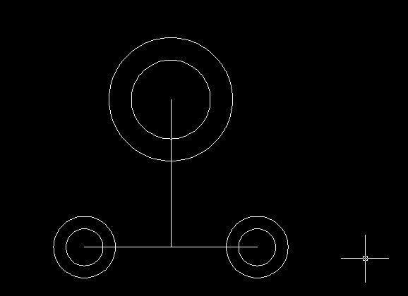
- Membuat lengkungan bagian bawah.
command yang di pakai : Circle (c) - TTR
- C => TTR => klik di deffered tangent lingkaran samping kiri dan kanan => tulis 150 (ukurannya) =>
contoh deffered tangent
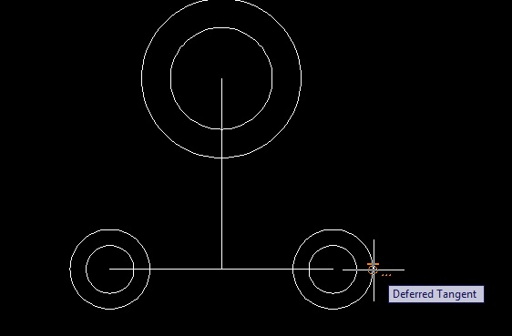
contoh hasinya
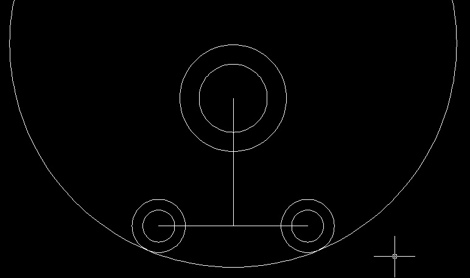
- Hapus Object.
command yang di pakai : Trim (tr)
- Tr => => klik object yang akan di hapus =>
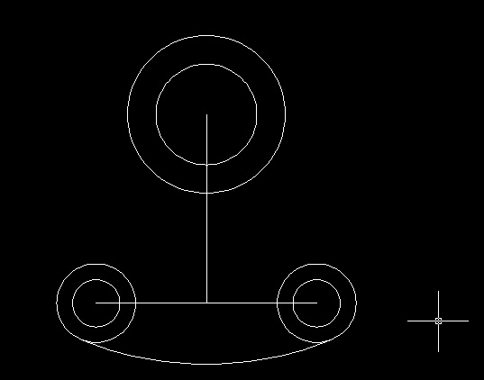
- Membuat lengkungan samping kanan.
command yang di pakai : Fillet (f)
- f => R => tulis 70 (ukurannya) => klik object pertama (lingkaran atas) - klik object kedua (lingkaran samping kanan) =>
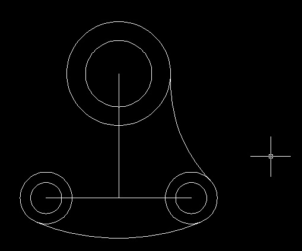
- Membuat garis ketiga.
command yang di pakai : Line (L)
- L => klik di deffered tangent lingkaran luar bagian atas - Tarik ke bawah sampai menyentuh garis pertama => =>
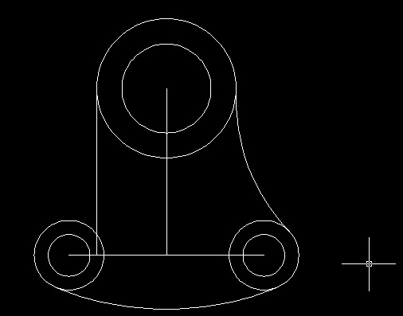
- Membuat lengkungan samping kiri.
command yang di pakai : Fillet (f)
- F => R => tulis 16 (ukurannya) => klik object pertama (garis ketiga) - klik object kedua (lingkaran samping kiri) =>
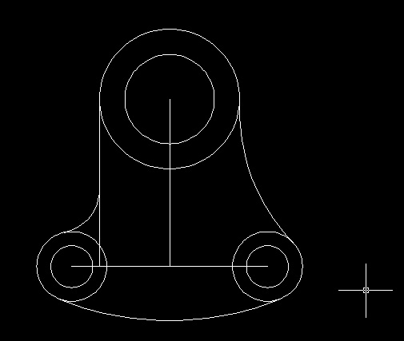
- Hapus object yang tidak perlu.
command yang di pakai : Trim (tr)
- Tr => => klik object yang akan di hapus =>
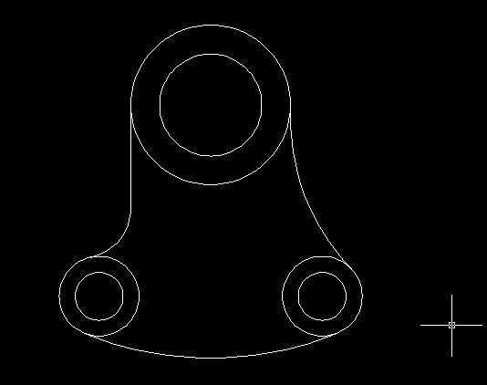
- warnai object.
command yang di pakai : Hatch (ha)
- Ha => 'muncul tabel'- pilih gradient- setting sesuai pilihan warna yang anda inginkan - pilih ok - pilih add object - klik object yang akan di warnai =>
contoh tabel hatch
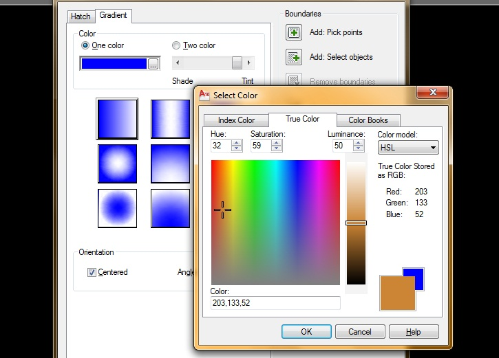
contoh hasilnya
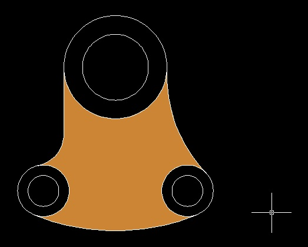
- Menampilkan ukuran garis.
command yang di pakai :Dim linear (Dli)
- Dli => klik dari ujung ke ujung garis pertama - tarik ke space/tempat yang di inginkan =>
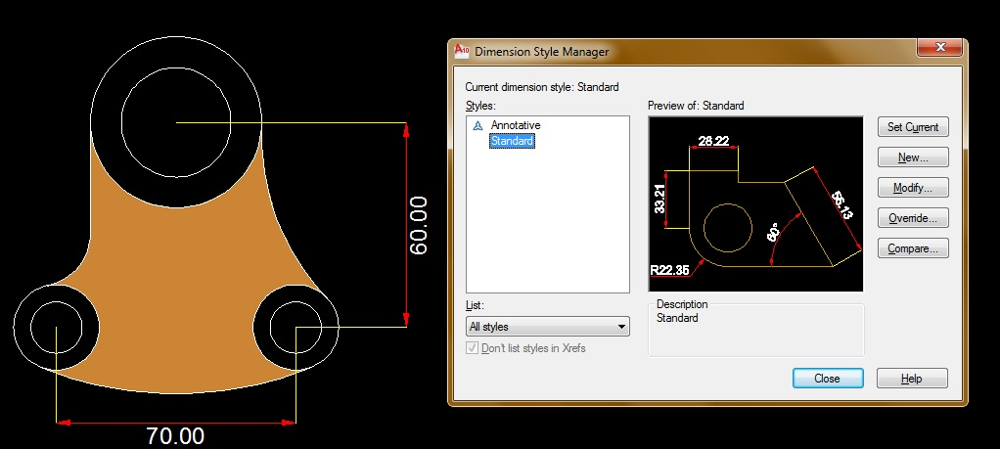
- Mengatur dimensinya agar tampilannya lebih bagus.
command yang di pakai : Dimensi (D)
- D => 'muncul tabel' - pilih modify - setting sesuai keinginan mulai dari ukuran textnya,warna garisnya,dll - jika sudah pilih ok - pilih set current - pilih close
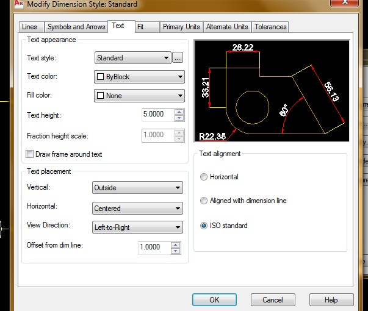
- Menampilkan ukuran lingkarannya.
command yang di pakai : Dim Radius (Dra)
- Dra => klik di lingkaran - tarik ke space/tempat yang di inginkan untuk menampilkan ukurannya =>
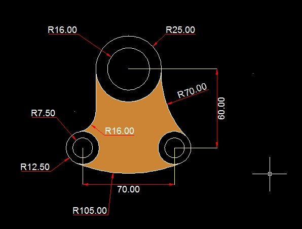
Demikian tutorial membuat gambar chamshaft mesin 2d pada autocad, mudah-mudahan bisa sedikit membantu teman-teman semua dalam mengerjakannya ..
TUTORIAL MEMBUAT GAMBAR 2D KIPAS ANGIN DENGAN AUTOCAD
Saya akan menjelaskan bagaimana langkah-langkah untuk membuat gambar kipas angin 2d dalam autocad, dan versi autocad yang saya pakai adalah autocad 2010. ok jadi langsung aja kita mulai ..
ket:
(untuk tanda => itu artinya enter)
(untuk tanda - itu artinya terus)
- Membuat Lingkaran.
command yang di pakai : Circle (c)
- C => klik di sembarang - tarik kesamping – tulis 20 =>
- C => klik di titik tengah lingkaran tadi lalu geser – tulis 25 =>
- C => klik di titik tengah lingkaran tadi lalu geser – tulis 190 =>
- C => klik di titik tengah lingkaran tadi lalu geser – tulis 200 =>
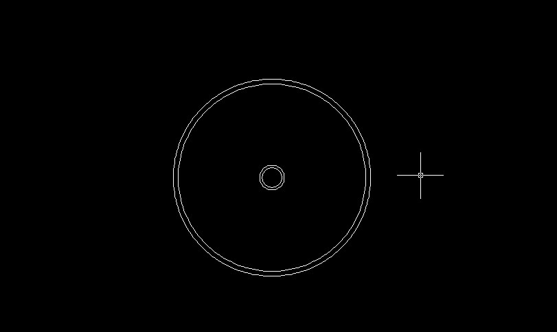
- Membuat Garis Di Dalam Lingkaran.
command yang di pakai : Line (L)
- L => klik di titik tengah lingkaran - Tarik ke atas – tulis 150 => =>
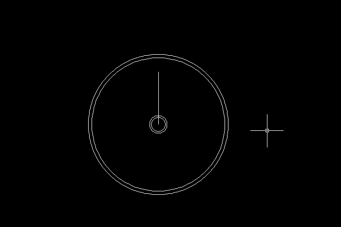
- Membuat Lengkungan (Baling – Baling).
command yang di pakai : Arc (a)
- Arc => klik ujung garis => E => klik ujung garis lainnya => R => 100 =>
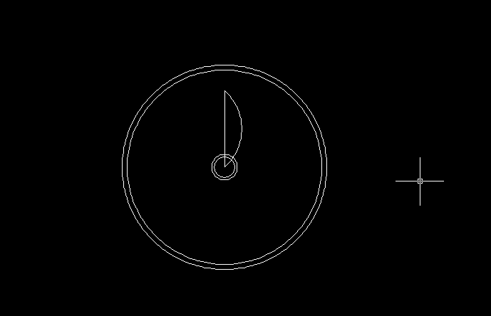
- Membuat Lengkungan Sebelahnya.
command yang di pakai : Mirror (mi)
- Mi => klik object => cari basepointnya lalu klik ujung garis pertama dan kedua (endpoint) => N =>
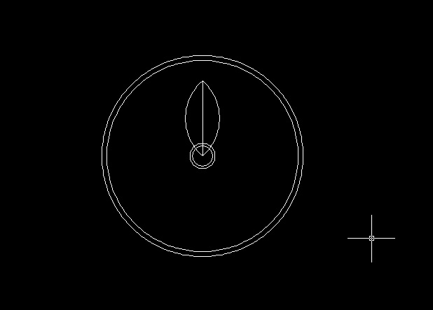
- Membuat 2 Lengkungan Kecil.
command yang di pakai : Fillet (f)
- F => R => 25 => klik object 1 dan 2 =>
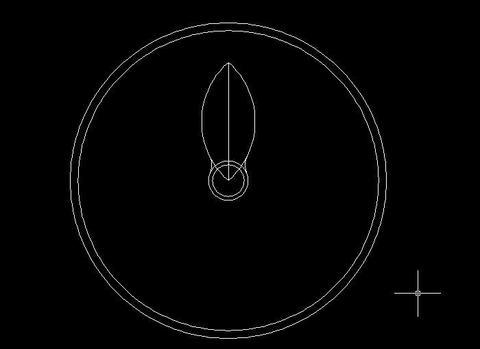
- Hapus Object Yang Tidak Perlu.
command yang di pakai : Trim (tr)
- Tr => => klik object yang akan di hapus =>
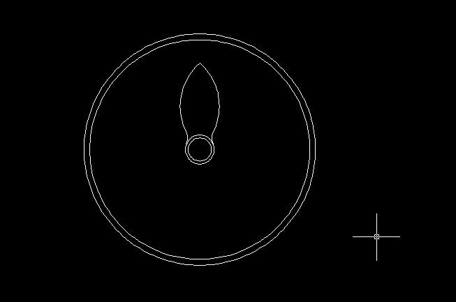
- Menggandakan Object (Baling-Baling).
command yang di pakai : Array (ar)
- Ar => ‘muncul tabel’ - pilih pollar array - pilih center pointnya - pilih object - tulis 3 - pilih preview =>
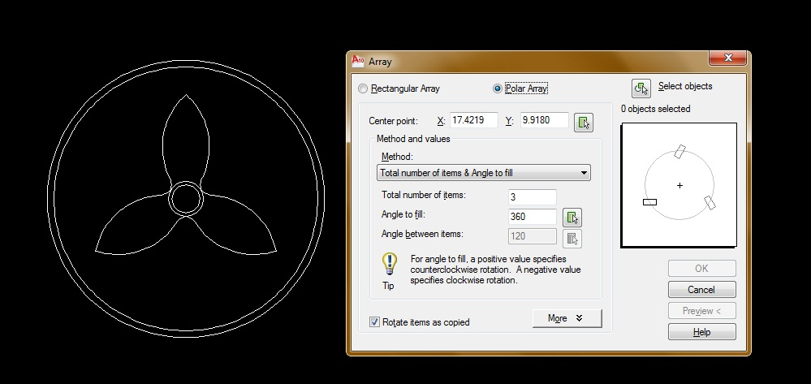
- Membuat Kotak Untuk Tempat Tombol.
command yang di pakai : Line (L)
- L => klik di quadrant lingkaran bagian bawah - Tarik ke bawah – tulis 150 => =>
- Offset => 50 => klik object/garis tadi - klik di samping kiri garis => lalu klik object/garis tadi lagi - klik di samping kanan garis =>
- L => klik di ujung garis yang udah di offset bagian bawahnya – Tarik ke samping nya – tulis 100 => =>
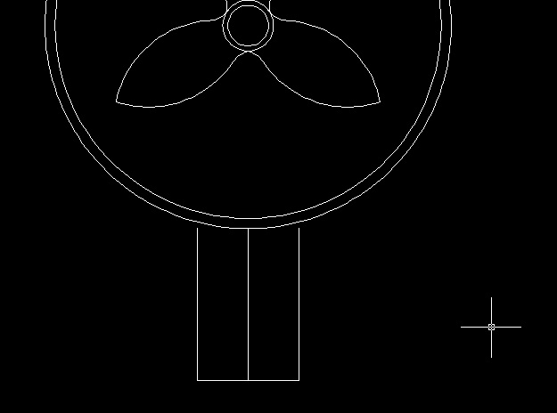
- Menyambung Garis Yang Terputus.
command yang di pakai : Extend (ex)
- Ex => => klik object/garis yang terputus =>
object terputus
object tersambung
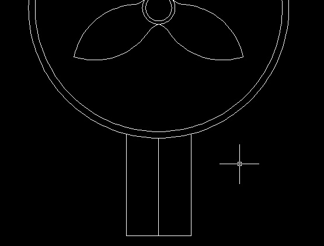
- Membuat Lengkungan Kecil Di Bagian Sudut Bawah Dan Menghapus Object Yang Tidak Perlu.
command yang di pakai : Fillet (f) dan Trim (tr)
- F => R => 20 => klik object 1 dan 2 =>
- Tr => => klik object yang akan di hapus =>
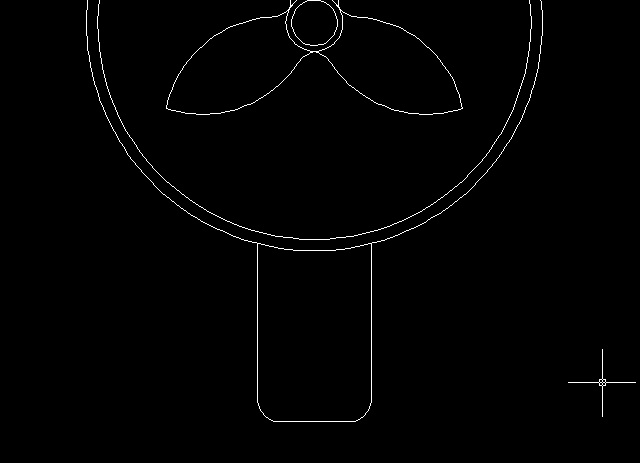
- Membuat Tiang Kipas.
command yang di pakai : Line (L) dan Offset (o)
- L => klik titik tengah di kotak bagian bawah - Tarik ke bawah - tulis 300 => =>
- Offset => 10 => klik object/garis yang di buat tadi => klik di samping kanan garis/object => lalu klik di samping kiri garis/object =>
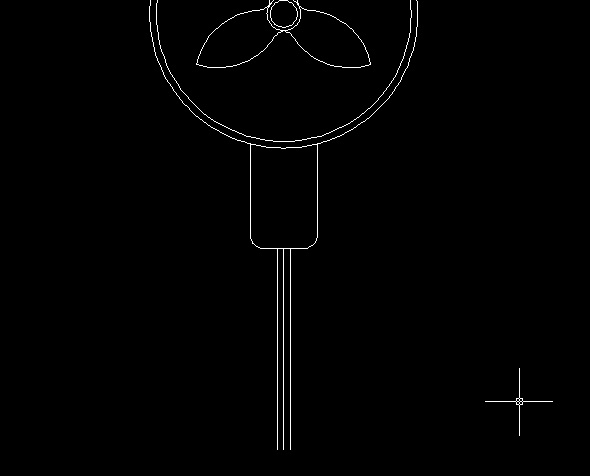
- Membuat Tatakan Kipas Nya.
command yang di pakai : Line (L) dan Offset (o)
- L => klik ujung garis tengah – Tarik ke samping kanan – tulis 100 => =>
- L => klik ujung garis tengah – Tarik ke samping kiri – tulis 100 => =>
- Offset = > 30 => klik garis yang di buat tadi - lalu klik di bawahnya =>
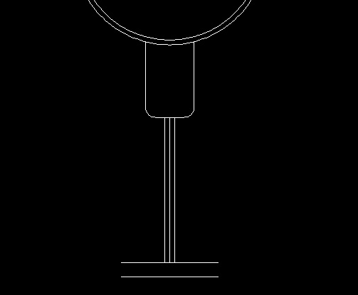
- Membuat Garis Penutup Kiri Dan Kanan Lalu Menghapus Object Yang Tidak Perlu.
Gunakan command Line (L) dan Trim (tr), caranya seperti yang sudah di jelaskan di atas
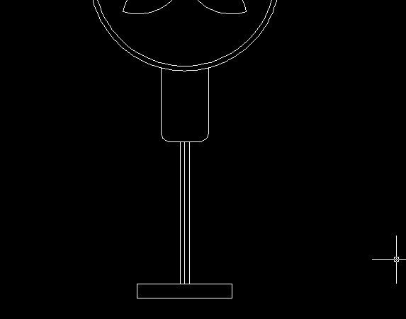
- Membuat Lengkungan Kecil Di Bagian Tatakan Atasnya.
command yang di pakai : Fillet (f) dan Trim (tr)
- F => R => 20 => klik object 1 dan 2 =>
- Lalu hapus object yang tidak perlu
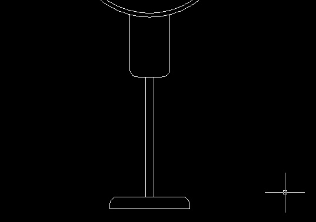
- Membuat Jaring-Jaring/Pelindung Baling-Baling.
command yang di pakai : Hatch (ha)
- Hatch => ‘muncul tabel’ – ikuti sperti gambar di bawah ini =>
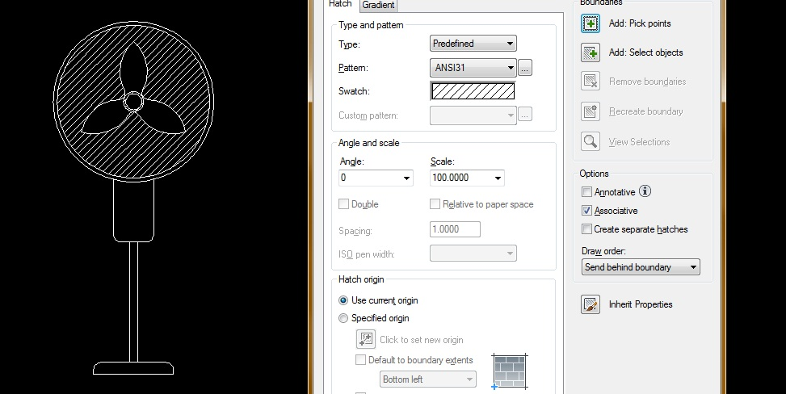
- Membuat Tombol Kipas.
command yang di pakai : Ellipse (el)
- Ellipse => klik sembarang tempat – Tarik ke bawah – tulis 10 => lalu Tarik ke samping – tulis 20 =>
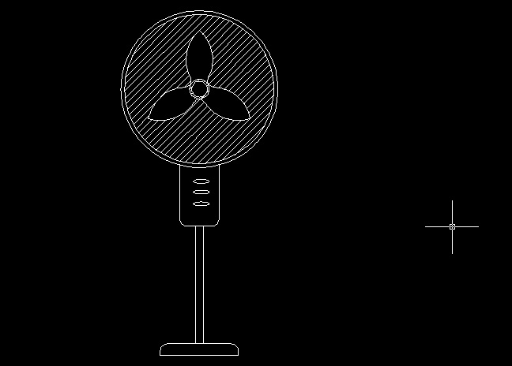
- Memberi Nama.
command yang di pakai : Dtext (dt)
- Dtext => klik sembarang – Tarik ke bawah – tulis 30 => lalu Tarik ke samping – tulis 0 => lalu tulis sesuai yang di inginkan => =>
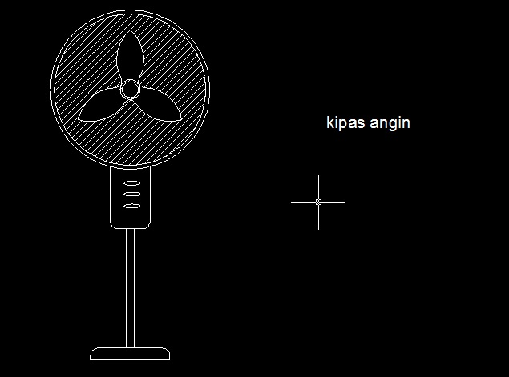
Demikian tutorial membuat gambar kipas angin 2d pada autocad, mudah-mudahan bisa sedikit membantu teman-teman semua dalam mengerjakannya ..
TUTORIAL MEMBUAT GAMBAR 3D KENDI DENGAN AUTOCAD
Saya akan menjelaskan bagaimana langkah-langkah untuk membuat gambar kendi 3d dalam autocad, dan versi autocad yang saya pakai adalah autocad 2010. ok jadi langsung aja kita mulai ..
ket:
(untuk tanda => itu artinya enter)
(untuk tanda - itu artinya terus)
- Membuat Lingkaran 1.
command yang di pakai : Circle (c)
- C => klik di sembarang - tarik ke samping – tulis 1000 =>
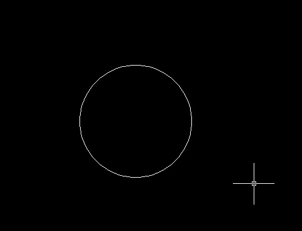
- Membuat Lingkaran 2.
command yang di pakai : Circle (C)
- C => Tulis 2p => klik di qudrant lingkaran 1 – tarik ke atas - tulis 1000 (ukurannya dalam diameter) =>
contoh quadrant lingkaran
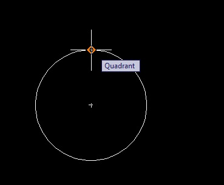
contoh hasilnya
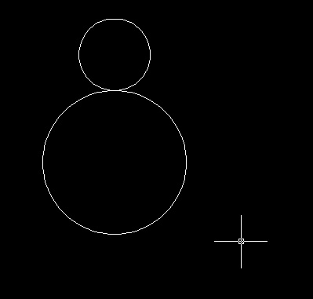
- Membuat garis tengah.
command yang di pakai : Line (L)
- L => klik dari quadrant lingkaran 2 ke quadrant lingkaran 1 => =>
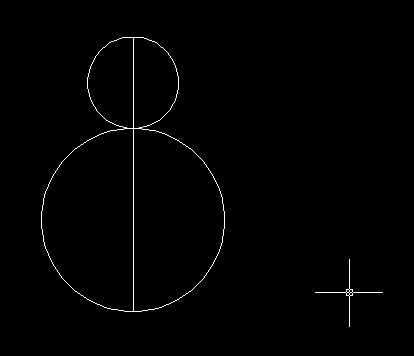
- Hapus object.
command yang di pakai : Trim (Tr)
- Tr => => klik object yang akan di hapus =>
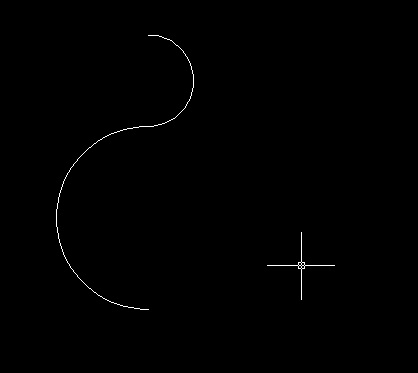
- Menggandakan object.
command yang di pakai : Offset (O)
- Offset => 50 => klik object - klik di sampingnya =>
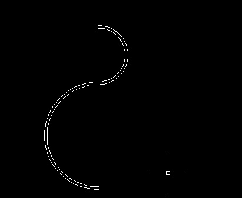
- membuat garis di bagian bawahnya.
command yang di pakai : Line (L)
- L => klik di ujung garis bawah - tarik ke samping - tulis 1000 (ukurannya)=> =>
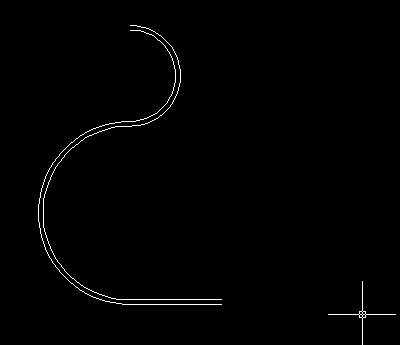
- Lengkapi garis yang lainnya.
command yang di pakai : Line (L)
lakukan hingga seperti gambar di bawah ini yang ada dalam kotak merah..
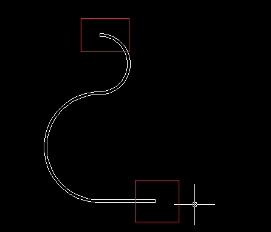
- gabungkan object .
command yang di pakai : Pedit
- Pedit => klik object => Y => pilih join => klik object-object yang akan di gabungkan/dengan memblok semua object => =>
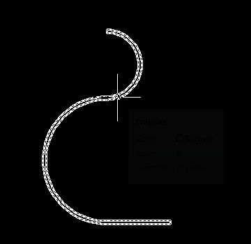
- Membuat garis bantu.
command yang di pakai : Line (L)
lakukan sehingga menjadi gambar di bawah ini..
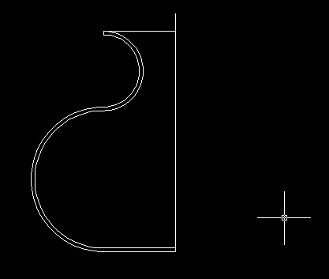
- Merubah object 2d menjadi 3d.
command yang di pakai : Revolve (Rev)
- Rev => klik object yang udah di pedit tadi => cari specify start pointnya yaitu klik dari ujung bawah ke ujung atas garis tengah => 360 =>
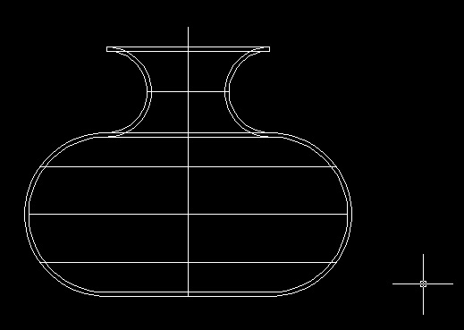
- Merubah tampilan dari 2d menjadi 3d.
command yang di pakai : Viewstyle (Vs)
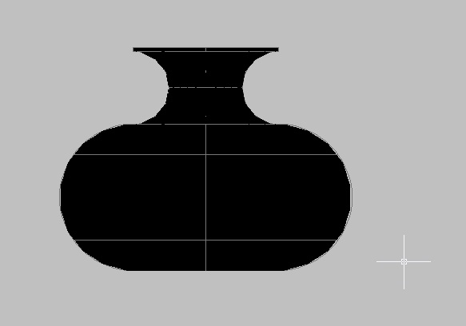
- Merubah sudut pandangnya.
command yang di pakai : Viewpoint (Vp)
- Vp => 'muncul tabel' - pilih absolute to WCS - pilih 315 , 30 =>
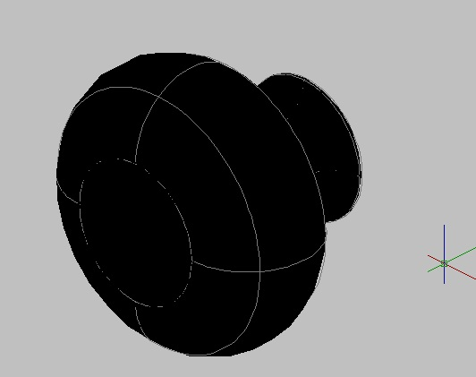
- Merotasi object 3d agar tampak lurus/tidak miring.
command yang di pakai : 3D rotate (3r)
- 3R => klik object => sentuh warna merah sehingga object berubah lurus tampilannya - kemudian klik =>
contoh tampilan 3R
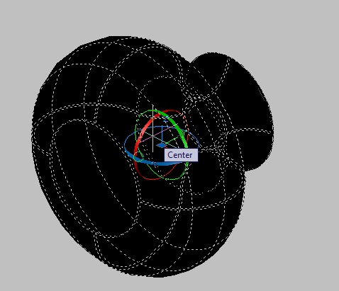
contoh hasilnya
- Mewarnai object 3d.
command yang di pakai : Tool pallet (Tp)
- Tp => 'muncul tabel' - pilih flooring atau lainnya terserah sesuai keinginan anda - kklik dan drag warna ke objectnya =>
- Memberi tulisan/text pada tampilan 3d.
command yang di pakai : Dtext (Dt)
akan tetapi kita harus merubah ucsnya terlebih dulu agar text tidak miring..
- UCS => V =>
- Dt => klik di space/tempat yang di inginkan - tarik ke bawah - tulis 300 - tarik ke samping - tulis 0 => tulis text/tulisannya - ctrl+enter
ucs sebelum di ubah
ucs sesudah di ubah
contoh hasilnya
Demikian tutorial membuat gambar kendi 3d pada autocad, mudah-mudahan bisa sedikit membantu teman-teman semua dalam mengerjakannya ..